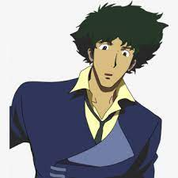

About Spike
Spike is the main character in Cowboy Bebop who uses a spaceship and crew to hunt bounties
Spike Spiegel
Spike's Characteristics
- He's the main character
- He Hunts bounties
- Constantly hungry
Spike's Friends
Spike has three main companinions (Click on the links below)